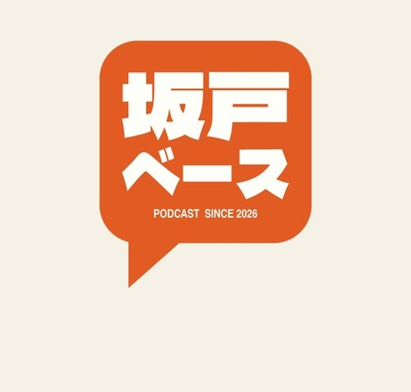
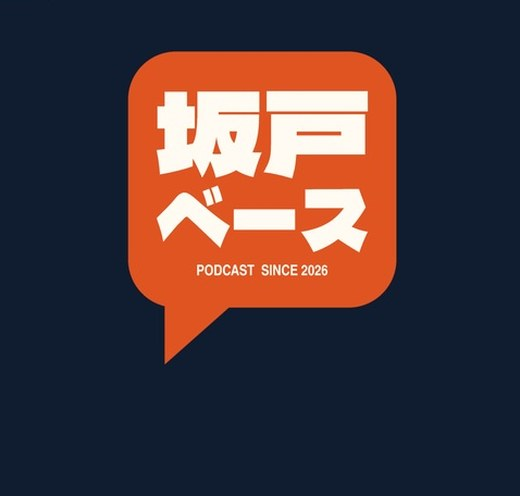

吹き出しロゴと東上線カラー10案に寄せた共有ページのリデザイン案。色はどの番号にも差し替え可能。
1989年生まれ・北坂戸の3人が月イチで集まる雑談ラジオ
第1回のタイトル、どれがいい？10案から選んでね
「開局初日から尿酸値の話」で
次のバーミヤンいつ行ける？カレンダーをタップ
ロゴ＝吹き出しをそのままUI言語に。投票も感想もぜんぶ「トークの返信」の見た目で答えていく。3人のLINEグループに貼る文化と地続き。色は01オレンジ基調（どの番号にも変更可）。
東上線カラーを一番ストレートに使う案。ヘッダーが駅名標、セクションが「のりば」、前後の駅に前回・次回。10案の色（紺02/04・青10など）がそのまま路線帯になる。
収録場所＝ファミレスをネタにした品書き風。色は05ベージュ×こげ茶。各セクションがメニューの一品で、値段の位置に「32分」「10案」。ゆるさと手作り感が3人の距離感に合う。
第1回 配信中
2026.8.18 バーミヤン北坂戸

10案の03（濃紺×オレンジ）をそのまま画面に。唯一のダーク案。深夜ラジオの放送室のトーンで、再生まわりが一番かっこよく見える。文字情報が多い投票ページとしては好み分かれ枠。
2026年8月18日発行 バーミヤン北坂戸支局
地元の回覧板・学級新聞の文法。色は07生成り×紺。読み物（文庫版）と一番相性がよく、2段組の記事として要約が載る。回して「済」のハンコ＝回答完了の演出。